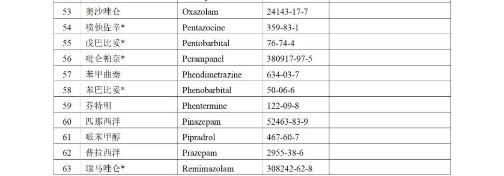

dowond yang
@YangDowond
倒也不是说完全没有滥用价值，毕竟AMPA受体的机制和NMDA受体机制是交联在一起的，高剂量服用确实会产生氯胺酮样欣快解离作用，但副作用太大了，毕竟AMPA受体掌管的人体关键技能比NMDA要多

dowond yang
@YangDowond
各位如果看精麻列管表里可以看到一个名叫“吡仑帕奈”的药，卫材原研，它是一种抗癫痫药，一种AMPA受体拮抗剂，没有滥用价值
那没有滥用价值为什么会被列入精二管理呢？答案是FDA给吡仑帕奈打上了超级罕见且严厉的黑框警告：拮抗 AMPA 会带来一个危险的副作用：极端的敌意和杀人倾向（） https://t.co/3W6e4xvtUW